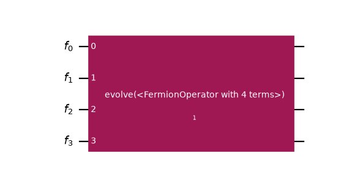
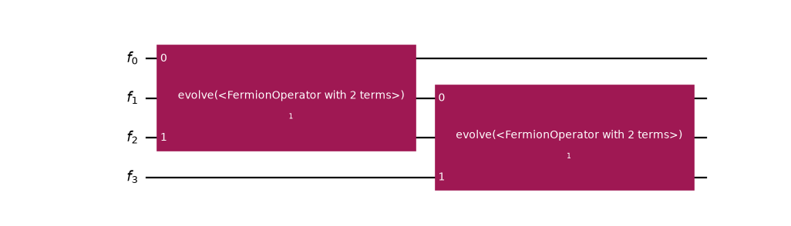

Work with fermionic circuits¶
Important
The concepts in this guide are currently available only in the Python API. Equivalent functionality will be made available in the C API in a future release.
This guide explains how to use the FermionicCircuit to implement
quantum algorithms directly in fermionic space, rather than mapping to qubits
first.
Why use fermionic circuits¶
Consider the traditional workflow for implementing the time evolution of a fermionic Hamiltonian on a qubit-based architecture:
Define the fermionic Hamiltonian (for example, \(H = \sum_{pq} h_{pq} c^\dagger_p c_q\)).
Map it to a qubit operator (for example, by using the Jordan-Wigner mapping).
Implement the time evolution in qubit space (using Trotterization or other methods).
This approach has a fundamental limitation; early mapping to qubits discards problem-aware knowledge about the fermionic structure. Standard optimization passes cannot exploit fermionic symmetries or allowed term reorderings, resulting in suboptimal circuits with unnecessary depths and gate counts.
The FermionicCircuit enables a better workflow:
Define the fermionic Hamiltonian (for example, \(H = \sum_{pq} h_{pq} c^\dagger_p c_q\)).
Implement the time evolution directly in fermionic space using fermionic gates.
Map to qubit space as part of the transpilation process.
This approach addresses the limitation by keeping problem-aware knowledge in fermionic space, where optimization passes can exploit fermionic structure and commutation relations to reduce circuit depth. The fermionic circuit describes what computation to perform, while transpilation handles how to map it to qubits, providing a cleaner separation of concerns.
Generic mode indexing¶
Both the operators module and the
FermionicCircuit use generic mode-based indexing that makes no
assumptions about the nature of the modes. A mode is simply an abstract index
labeling a fermionic degree of freedom, with no inherent semantics. This design
choice mirrors the operators module and ensures maximum flexibility.
For example, you can implement time evolution for any operator implementing the
OperatorTrait protocol, regardless of its mathematical representation.
Build a fermionic circuit¶
The example below implements the time evolution described in the previous section.
It constructs a FermionicCircuit by specifying the number of fermionic
modes, then adds fermionic gates from the qiskit_fermions.circuit.library
to implement the time evolution.
The example also demonstrates how to incorporate domain knowledge into an operator by using operator term grouping. By assigning group indices to the Hamiltonian terms, you preserve structural information that optimization passes can exploit throughout the transpilation stack.
>>> from qiskit_fermions.circuit import FermionicCircuit
>>> from qiskit_fermions.circuit.library import Evolution
>>> from qiskit_fermions.operators import FermionOperator, cre, ann
>>>
>>> # Create a circuit with 4 fermionic modes
>>> circuit = FermionicCircuit(4)
>>>
>>> # Define a simple fermionic Hamiltonian
>>> hamiltonian = FermionOperator.from_terms([
... ([cre(0), ann(2)], 0.5),
... ([cre(2), ann(0)], 0.5),
... ([cre(1), ann(3)], 0.5),
... ([cre(3), ann(1)], 0.5),
... ])
>>> # Add some problem structure by grouping our Hamiltonian terms
>>> hamiltonian.groups = [0, 0, 1, 1]
>>>
>>> # Add an evolution gate to implement exp(-i * t * H)
>>> evolution = Evolution(4, hamiltonian, time=1.0)
>>> circuit.append(evolution, circuit.register)
// The C API for FermionicCircuit is not available yet.
{kind=link}
{kind=link}

{kind=link}
{kind=link}

Notice how the operator term grouping is preserved even in simple operations like decomposition. This demonstrates how structural information flows through the circuit stack. To understand the full transpilation to qubits, refer to the Transpiling fermionic circuits guide.
Transpile fermionic circuits¶
To implement the quantum algorithm represented by your
FermionicCircuit it must be transpiled to a
QuantumCircuit. You can learn how to do this in the
Transpile fermionic circuits guide.
Next steps¶
Learn about available fermionic gates in the
qiskit_fermions.circuit.librarydocumentation.Explore the operators explanation guide to understand how to construct fermionic Hamiltonians that you can use with fermionic circuits.
Review the SQDRIFT getting started guide for a practical end-to-end example.
Read the ffsim backend guide to understand how a
FermionicCircuitcan be simulated directly, and how these generic mode indices take on spin semantics only at simulation time.